Nous voici arrivés à l’été 1991. Comme l’année dernière à la même date, on voudrait entrer dans une période où l’actualité ralentit et s’apaise, et comme l’année dernière, ce sera à nouveau l’été des crises. On va donc d’abord mettre la focale sur l’Europe post-soviétique : les derniers piliers qu’étaient le CAEM et le Pacte de Varsovie sont dissous. Mais cette dissolution est plus symbolique et sans effusion de sang que celle de la Yougoslavie, où Croatie et Slovénie proclament leur indépendance, ce qui déclenche l’intervention des forces fédérales pilotées depuis la Serbie et une guerre civile larvée entre nouvelles nations, troupes dissidentes ou mercenaires, et les multiples zones autonomes serbes soutenues par Belgrade qui se forment alors.
Le grand frère soviétique, même s’il survit encore, n’est plus à même d’intervenir et lui-même, alors qu’on est au plein milieu du mois d’août, subit un putsch interne qui est vite avorté : les troupes font défection, les manifestants se rassemblent en masse, et Boris Eltsine s’impose en se hissant sur un char. Alors que déjà les républiques Baltes ou la Géorgie s’agitaient pour leur indépendance, la désagrégation de l’Union Soviétique s’accélère avec la même vitesse que la Chute du Mur de Berlin : dissolution du Parti Communiste, ou indépendance de l’Ukraine et de la Biélorussie jusqu’ici fidèles au grand frère russe. Comme un symbole, l’ancienne Leningrad est renommée Saint Petersbourg, et l’ère soviétique entame les derniers mois de son existence.
Au creux de cet été surtout occupé par la crise en URSS, se joue pourtant la révolution technologique qui a façonné notre époque. Tout ceci reste encore très confidentiel quand on vivait en 1991, mais c’est sur cette même période que le premier site Internet info.cern.ch, issu du projet du World Wide Web est créé. Linus Torvalds annonce pour sa part le développement et la mise à disposition de son Système d’Exploitation Linux. Enfin, le premier appel téléphonique sur un réseau GSM est expérimenté en Finlande. Voilà de superbes sources d’inspiration pour jouer un Mage L’Ascension 1991, où la Technocratie aurait posé discrètement ses pions pour l’emporter sur les Traditions dans la Guerre de la Réalité qui les opposent pour le contrôle des Dormeurs.
En France, le nouveau gouvernement Cresson s’installe puis le pays part en congés d’été, mais avec la crainte de retrouver au retour une lettre de licenciement : après avoir repris depuis le début de l’année et été une des causes de la chute du Gouvernement Rocard, le chômage continue de fortement progresser, passant de 2,5 millions à 2,75 millions de chômeurs sur les six premiers mois de l’année et accélérant, pour bientôt aller flirter avec les 3 millions de chômeurs…
Décortiquons maintenant ce n°64. La couverture un peu psychédélique pour ce bimestre est de Jean-Jacques Chaubin (dont je vous invite à découvrir le parcours à mille vies ici : https://www.babelio.com/auteur/Jean-Jacques-Chaubin/470451)
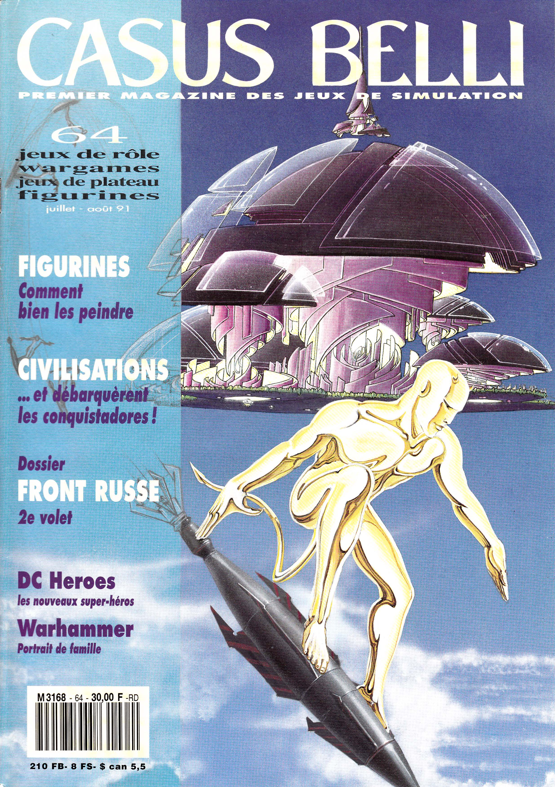
Actualité majeure de ce Casus estival, mise en avant dans l’édito : le démarrage d’une nouvelle enquête du lectorat de Casus, et par extension du rôliste cru 1991. Afin de retrouver avec quelles caractéristiques le rôliste de 1991 se déclinait, je vous reproduis ici la feuille de perso, en 8 pages quand même !!
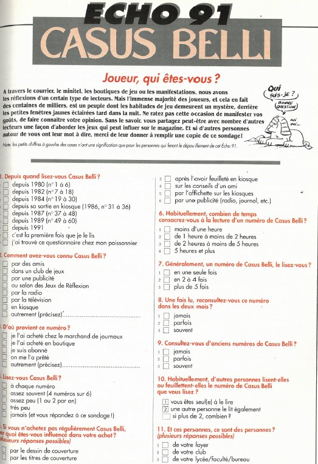
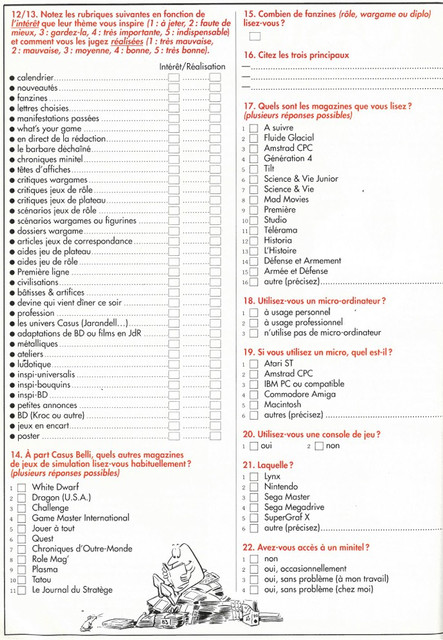
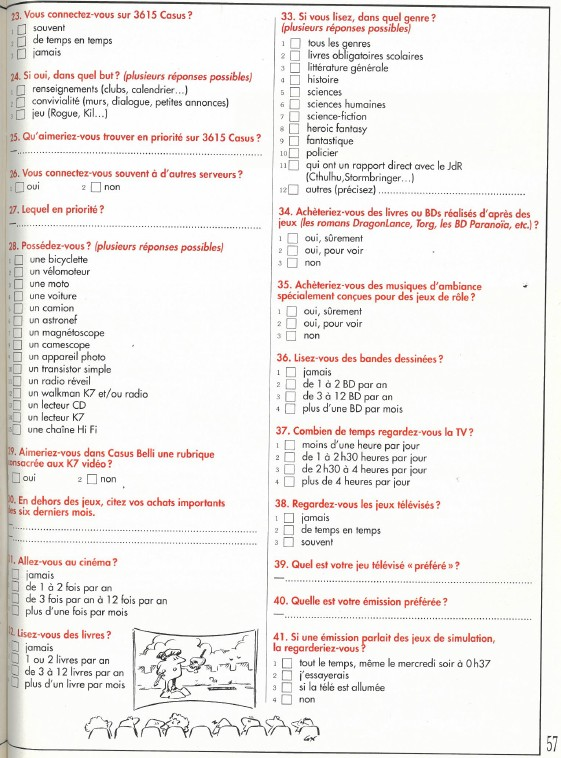
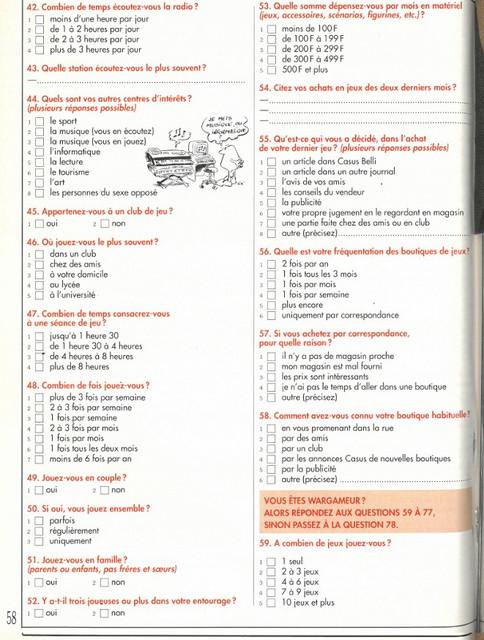
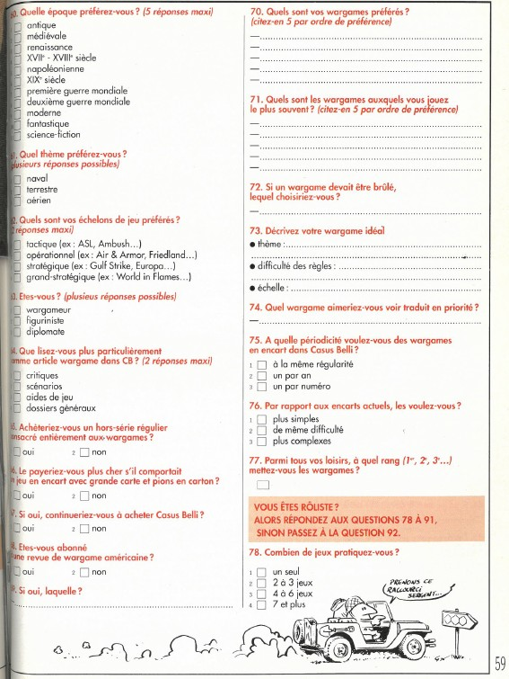
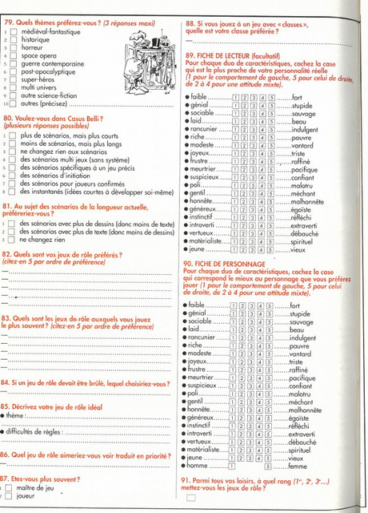
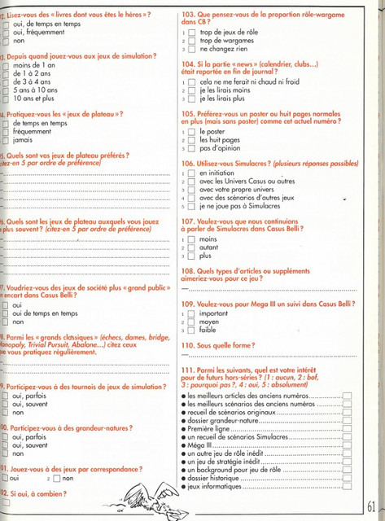
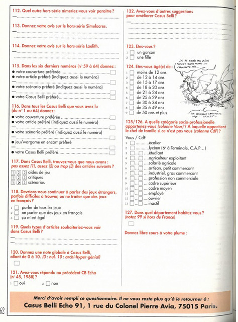
L’activité se porte toujours aussi bien : la saison des GN bat son plein, des structures professionnelles se développent proposant soit elle-même des GN pouvant se dérouler sur une semaine (!), soit des centres de vacances à thématique jeu de rôle. On trouvera même un camp des Eclaireurs et Eclaireuses de France de 10 jours, qui précède le France Sud Open de Toulon, qui reste la méga convention et rencontre de l’été.
Comme l’activité était déjà précédemment soutenue, on ne sera pas surpris de trouver encore deux pages pleines de débriefing des événements passés : Provins où les Journées du Club Pythagore ont fait des infidélités à Maléfices pour substituer cette fois-ci Hurlements, le concours des Créateurs de Jeux de Boulogne-Billancourt, ou ce record à Grenoble, après celui de la plus longue partie sans relais récemment battu de 83h, par une partie ici de 300h mais avec relais sur pas moins de 11 sessions successives sur Runequest. Eh ouais !
A cause de tout ceci, plus trop de place pour le reste du rédactionnel, à part la rubrique Zines de @Tristan et son désormais chouchou régulier (pour ce bimestre, le mémorable Tales of the Reaching Moon pour Runequest) qui allait livrer notre collectif national face à tout un tas de des lettres de supplications ou de menaces pour figurer dans ce coup de projecteur envié. Tristan fait aussi une mise au point sur cette rubrique, que je reproduis ici et qui montre à la fois le dynamisme de l’époque et surtout que les zines étaient un vecteur pas si négligeable d’échanges dans cette époque pré-Internet :
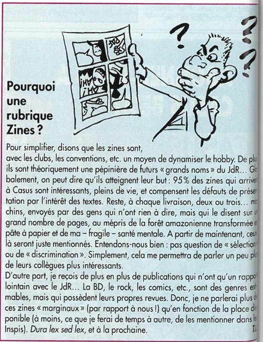
Dans cette époque qui veut communiquer mais avec les outils disponibles, on peut aussi évoquer le 3615 Casus régulièrement mis en avant avec ses BAL, son MUR et même maintenant une rubrique Téléchargement de Logiciel pour les gens qui auraient l’idée saugrenue d’avoir un PC et un Modem, genre le truc qu’on ne voit même pas même au cinéma tant l’informatique « de pointe » est encore un domaine confidentiel, à moins de lire Sciences et Vie Micro…
On relèvera aussi la BD d’1 page que je reproduis ici du Barbare Déchaîné sur la folie Pin’s qui battait alors son plein à l’époque, au point de faire les titres des 20h : https://www.ina.fr/ina-eclaire-actu/video/cab91047406/pin-s-mania-les-epingles
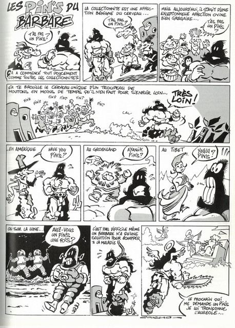
On bascule sur les prévisions météoludiques et les critiques ! Les parutions ralentissent sur les VF avec la période des congés d’été approchant : Fléo commence à développer la gamme Mercenaires avec les modules La valise bleue et Les Premiers Pas. Hexagonal traduit Aux portes du Mordor pour JRTM et annonce le lancement de la VF du Dragon Magazine, maintenant que le Dragon Radieux a laissé une place béante. Jeux Descartes continue à soutenir ses différentes gammes : L’Empire du Nil pour TORG, Outrespace pour Star Wars, Les Mystères d’Arkham pour l’Appel de Cthulhu, et enfin Capitaine Vaudou pour Simulacres (mais SangDragon est repoussé ultérieurement, pour être finalement sacrifié).
Du côté de Siroz, on trouvera l’écran et Urban Guerilla pour Heavy Metal, le numéro 5 de Plasma (et de non de Chanel), et enfin Mindstorm pour INS / MV. Oriflam sort pour sa part la VF Solo of Fortune pour Cyberpunk, supplément de première édition, avec donc pour décor 2013 et non pas les Années Noires de la décennie 2020 de la 2nde édition du jeu.
Planning plus chargé outre Atlantique pour cause de Gen Con imminente : après Republic of Rome, Avalon Hill sort Blackbeard, que Descartes traduira également sous Barbe Noire. Même madeleine pour vous que Res Publica Romana, ou même disparition des mémoires que Zargos ? Chaosium sort la mythique campagne pour Pendragon The Boy King. Pour FASA, on évoque pour Shadowrun le premier volume des Native Americans Nations, en attendant le London Sourcebook qui sera le premier guide « régional » écrit par des autochtones. Battletech continue son développement en parallèle, et sa déclinaison en JDR avec la nouvelle édition de Mechwarrior, et l’abandon de la licence Star Trek est aussi annoncé ici (mais il semble que les sorties étaient arrêtées depuis quelques éons également…).
ICE a certes ralenti mais Rolemaster continue sa carrière (War Law et le Companion V), ainsi que MERP / JRTM (Minas Ithil), et Cyberspace est encore vivant (Chicago Arcology). Même exploitation des gammes qui tournent comme des horloges suisses d’abord chez Steve Jackson Games, avec la 2ème édition de GURPS Supers, puis chez West End Games avec Star Wars et le Galaxy Guide 7 et Cracken’s Field Guide et TORG (Le Nippon Tech Sourcebook dont Tristan dit plus loin tout le bien qu’il en pense, et le Kanawa Personal Weapons Book pour ne pas oublier l’essentiel).
Chez Talsorian, c’est évidemment encore et toujours Cyberpunk qui truste la production. D’abord l’EuroSource Book, qui surfe sur la même veine que Shadowrun des suppléments régionaux hors US écrits par des locaux. Puis, avec le même mimétisme que chez les concurrents, la publication par Talsorian du 2ème numéro d’Interface, revue produite par les joueurs à l’image des Chroniques de TORG, preuve du besoin de créer et communiquer autour de son jeu favori avec les moyens encore limités de l’époque. C’est aussi ici qu’on apprend que Talsorian ne pourra pas encore se diversifier davantage, son auteur star maison Eric Wujcik ayant décidé de faire paraître ailleurs un Amber toujours en préparation …
La nouvelle boîte d’initiation pour D&D est sortie chez TSR, et donc prête pour la Gen Con 1991 ! Je laisserai @Loris qui en est un fin connaisseur nous en dire plus s’il le souhaite. Les Forgotten Realms se diversifient même si c’est sans grande originalité avec le décor Maztica, et de même mais avec plus d’originalité pour Dragonlance avec Oak Lords. On continue avec Spelljammer encore bien vivant (Practical Planetology, The Legend of Spelljammer), et comme la diversification d’AD&D ne semble pas encore suffisante, TSR développe aussi Lankhmar (le recueil Tales of Lankhmar). Sans oublier l’ineffable Buck Rogers (Luna)… Mais l’information la plus essentielle est outre l’extension de la gamme générique AD&D2 (Arms and Equipment), l’annonce enfin de la distribution en France de la VF du Player’s Handbook, après quasiment deux ans d’indisponibilité. Cocorico ! ou presque… car long va encore être le chemin pour avoir la totalité du triptyque en français.
J’ai réservé ma conclusion sur l’actualité ludique de ce bimestre pour mettre en lumière quelques éditeurs outsiders, dont on va entendre parler un peu plus ensuite. D’abord, même si ça restera très marginal, Columbia Games avec sa 2ème édition de HârnWorld. Puis plus atypique, puisque je bascule sur le wargame, avec GMT avec sa gamme Great Battles of History et son premier opus antique Alexander the Great, qui va durablement marquer le wargame des années 1990. Pour terminer en apothéose avec la mention dans ce Casus de White Wolf, qui n’est pas complètement nouveau, mais annonce ici la sortie de Vampire: The Masquerade, qui déboulera donc en cet été 1991 sur les étals de la Gen Con et sera d’emblée un succès commercial (et on en reparle dès le prochain numéro de Casus Belli).
Je complète avec les critiques des produits qui n’ont pas été mentionnés dans les parutions. L’Epreuve du Feu est consacrée de façon un peu surprenante à la 2ème édition (en boîte) de DC Heroes, qui n’est pas une sortie récente (même si on tente de faire le lien avec la Batmania qui est elle-même lointaine), et qui n’est disponible qu’en VO. C’est Jean Balczesak qui signe cet article, justifié par la vénération profonde qu’il a de ce jeu, notamment sur son système aux mathématiques pointues. Ce qui m’avait convaincu bien des années plus tard à mettre la main la main sur un exemplaire pour étude, puisque je suis personnellement une bille en culture comics et pas spécialement amateur des JDR de Super Héros. L’objet repose depuis sur une étagère, mais je ne désespère pas de le disséquer un jour. Dommage ici que Casus n’ait pas proposé avec ce numéro un scénario d’accompagnement, maintenant que la tradition de coupler les EdF avec le cahier scénario s’est perdue.
A côté d’un DC Heroes un peu inattendu, Frédéric Ménage propose un Portrait de Famille de la VF de Warhammer sur lequel Descartes a mis le turbo. Comme on est à l’été 1991, la gamme ne va pas plus loin que Repose Sans Paix et Il y a quelque chose de pourri à Kislev, mais La Campagne Impériale a été traduite, et cela permet d’avoir un bon aperçu du potentiel de ce jeu à l’époque, qu’on assimilait encore à une alternative AD&D en un seul volume…
Avant de terminer avec les scénarios de ce numéro, un tour rapide sur les aides de jeu. Tristan nous propose un Profession : Courtisans, pas seulement pour jouer au jeu de plateau Aristo : plaisant à lire et plaisamment illustré par Florence Magnin. Pierre Lejoyeux consacre pour sa part à une double page pour Cyberpunk pour sortir du carcan merdique des classes de perso du système de jeu : plus forcément très utile (?), mais à redécouvrir aussi pour la très belle illustration de Didier Guiserix dessus ! Enfin, @Dany40 sera à nouveau heureux de l’aide de jeu TORG, qui me semble encore utile de nos jours pour une synthèse rapide du contexte et des forces en présence dans ce jeu (à reprendre et à distribuer en aide de jeu aux Chevaliers des Tempêtes par le Conseil de Delphes ?).
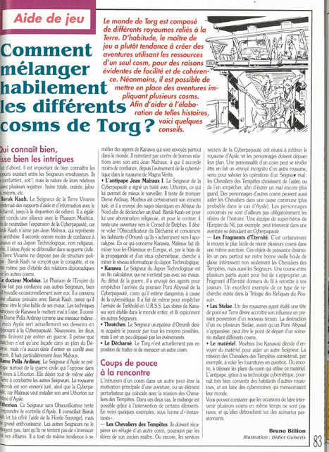
Toujours dans les aides de jeu, il n’y a pas que Descartes qui fasse de la production SimulacreS. Depuis la parution de son Hors-Série l’année précédente, Casus propose une rubrique tenue par Pierre Rosenthal, Le Petit Capharnaüm, qui propose des conseils ou nouvelles règles que je ne chronique pas forcément à chaque numéro. Je m’arrête ici, d’abord parce qu’en parallèle de la production Descartes, il y a toute une production amateure qui éclot, encouragée par Pierre Rosenthal qui est le premier à avoir mis la licence d’un jeu en libre, dix ans avant la première version de l’OGL : cette production donne parfois des pépites non seulement en termes d’originalité mais aussi de publication. C’est ainsi dans ce numéro que Casus évoque la parution chez le fanzine Scène à Rio de Bernard et Jean, jeu de rôle parodique inspiré des films du Gendarme avec De Funès, dans la même veine et de mon point de vue supérieur à Raoul. Je découvre que ce jeu a même eu les honneurs de sa gamme sur le GROG :
Dix ans avant aussi l’émergence de la scène indépendante avec la révolution du PDF ou de la CJDRA, on a donc toute une richesse via la production du fanzinat et le relais par Casus Belli de jeux amateurs, qui auront les honneurs des critiques dans notre magazine favori, comme on le verra dans le prochain numéro. Je termine avec Simulacres puisque ce numéro 64 vous propose aussi une aide de jeu du jeune @Olivier.Legrand pour le jeu de Tristan, lui aussi pré-Steampunk et très original pour l’époque, Aventures Extraordinaires et Machinations Infernales.
Après Les Aztèques et l’Amérique Précolombienne du n°62, et la parenthèse Akira du numéro 63, c’est maintenant celle des Conquistadores et de la conquête du Mexique par les Espagnols que nous offre Jean Balczesak sous le pseudonyme de son épouse. C’est toujours un modèle du genre entre informations historiques et utilisation en jeu, ce qui va me permettre de faire la transition avec l’encart scénario puisque celui-ci propose un Capitaine Vaudou, certes postérieur de 150 ans, mais qui plonge ses racines dans l’Histoire de la Région.
Or donc, les scénarios proposés dans ce numéro sont :
- Le Miroir Fumant, par Jean-Pierre Pécau pour le tout nouveau Capitaine Vaudou que Descartes vient de sortir dans sa gamme Simulacres : si vous avez depuis racheté la version BBE / Monolith, ou s’il vous reste votre antique exemplaire, je vous recommande chaudement cette production qui mêle culture maya, chasse au trésor et frères de la côte, dont une figure (tristement) historique
- Sale Hiver pour les clodos pour Berlin XVIII par Tristan : comme d’habitude avec ce jeu, Tristan sait très bien capter l’atmosphère du Secteur XVIII, et propose une mission dans un contexte pour le moins sordide pour nos Falks, au quotidien déjà pas bien riant. L’enquête est malgré tout un peu simpliste, et je l’ai trouvée moins aboutie que le scénario précédent, Gestalt Drug. Sale Hiver… a cependant le mérite de proposer un large panorama de la faune qui peuple Berlin en cette fin de XXIème siècle, et peut se révéler utile pour proposer un tour d’horizon, ou pour en piquer un décor ou des PNJ à réutiliser ailleurs. Peut-être que @Dox aura un avis moins sévère que moi
- Le Marché aux Puces pour TORG est un scénario qui se déroule dans la Cyberpapauté par Anne Vétillard. Un poil court par rapport à ses enjeux et ses ramifications, je l’ai trouvé tout de même réussi pourvu qu’on aime le décor très particulier de la Cyberpapauté avec ses implants cybernétiques, son régime théocratique dictatorial et son image romantique de la Résistance.
- La ville d’au-delà le désert pour Stormbringer par Tristan : ma lecture est un peu similaire à celle de Berlin XVIII. On est bien dans l’ambiance du jeu et des écrits de Moorcock, mais son intrigue m’a semblé un peu mince avec sa quête téléguidée dans le Désert des Larmes. Comme on est encore en 1ère édition avec la VF (la 2ème édition est en cours chez Oriflam mais pas finalisée), @nonolimitus trouverait de surcroît que cela manque de démons. Mais pour le plaisir de jouer à Stormbringer, il y a peut-être des éléments à reprendre de ce Désert balayé par les vents, pour aller plus loin dans l’idée d’un bac à sable (et pour cause) et trouver un nouveau souffle (et re-pour cause).
On passe sur le Jeu de Plateau avec une double page consacrée à ce monument (en tout cas pour moi) qu’a été Formule Dé, qui vient donc de paraître. Et encore mieux que le Championnat de France de Zargos, les fans du jeu organisent un Championnat du Monde, à l’image des vraies F1, certes pas avec les mêmes moyens financiers, mais avec les moyens imaginatifs de Ludodélire, puisque les finales se joueront physiquement sur des circuits géants. André Foussat nous fait ici un article très détaillé sur ce jeu encore très récent, truffé de jeux de mots pour faire référence aux pilotes de l’époque : Jean Alesi, Nelson Piquet, Alain Prost, Nigel Mansell ou l’évocation de l’écurie hexagonale Ligier. Vraoum !
Sur la partie Wargame, Casus continue à publier du matériel pour Les Diadoques, avant que la production de GMT ne prenne le relais (Casus toujours super visionnaire 👍) et le dossier de la Guerre à l’Est continue, où l’édito de Laurent Henninger que je reproduis ici invite à réagir sur son ton volontairement polémique du numéro précédent :
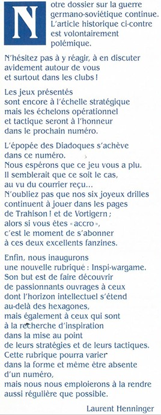
Après un premier dossier d’analyse (Quelles leçons stratégiques et tactiques tirer de ce conflit), avec toujours le même ton vif (et avec des exemples que j’avais trouvés réjouissants pour stigmatiser la compétence militaire de Hitler et de son état-major mais n’étaient-ils pas un peu biaisés ?), Casus passe en revue une partie des jeux emblématiques qui simulent ce Front, en dehors de la série Europa présentée dans le numéro précédent.
Sont donc abordés les jeux suivants : Russian Front de Avalon Hill, Trial of Strength de Panther Games, ou le jeu en solitaire Eastern Front Solitaire. Le gros morceau est consacré à The Great Patriotic War, plus vraiment récent pour sa part et déjà encensé précédemment dans Casus mais que Frank Stora souhaite remettre ici en valeur, avec un article très technique qui en reprend les règles, les commentent ou proposent des corrections : on trouve même une petite aide de jeu pour simuler le Front de la Guerre Russo-Finlandaise de 1940 avec bout de carte et pions à photocopier et découper. Utile et instructif, mais seulement si vous avez un exemplaire sur les étagères, ou si vous projetez d’en ajouter un car le jeu est encore trouvable à prix modique.
On passe aux Inspis et vous aurez noté que l’inspi Ludotique a désormais disparu depuis le numéro précédent : elle se trouve maintenant coincée dans les Têtes d’Affiche en fonction des jeux informatiques qui auront retenu l’intérêt de Casus. En lieu et place pour ce numéro, on trouvera une copieuse Inspi Wargame avec un éventail des lectures de Laurent Henninger à faire pâlir vu le volume, la technicité et la pluralité des sujets traités : récits de bataille certes, mais aussi traités de géopolitique, voire traités de médecine, d’enseignement ou de méthodes de travail, n’en jetez plus, il y en a sur deux pages.
On continue et termine avec les rubriques plus classiques. D’abord celle SF par Roland Wagner toujours écrite avec des propositions pour les réutiliser de façon ludique (mais en général plus comme aide de jeu que pour des jeux avec qui le lien serait évident), et toujours pleine de références qui me parlent peu : Mytale de Yal Ayerdhal, La guerre en ce jardin de Richard Canal pour ne citer que les auteurs qui ont perduré après cette année 1991. Dans les références rôlistes plus évidentes, on trouvera pour cette inspi le huitième tome du Monde de la Terre Creuse d’Alain Paris, Tehanu d’Ursula Le Guin ou même Chroniques du Désespoir de Roland lui-même, qui a la délicatesse de citer sa production sans s’attarder en auto-promo dessus.
Sur les BD, encore et toujours une avalanche de titres soutenus par les séries de l’époque (le tome 17 de Thorgal, le tome 6 d’Alef Thau, le tome 5 du Vent des Dieux) ou l’exploitation de licences célèbres (Les Tortues Ninja, Aliens ou le Cycle des Epées). Si je dois explorer des titres plus confidentiels, ma curiosité s’est portée sur ce numéro sur Les Héritiers dont on retrouver la signature des GE Ranne ou le début de la série Les Griffes du Marais.
On finit avec les recommandations de Tristan et la partie Universalis où j’ai retenu ses lectures historiques d’alors : la Guerre de Cent Ans avec les Chroniques de Froissart et le Journal d’un Bourgeois de Paris ; ou Raspoutine, une tragédie russe. Et pour finir sur les références historiques de Tristan, on trouvera aussi cette célèbre série de Hachette Jeunesse que je vous reproduis ici et qui réveilleront certainement des souvenirs pour celles et ceux qui étaient encore adolescent(e)s en 1991 et qui devaient plancher pour faire des exposés, toujours sans Internet :
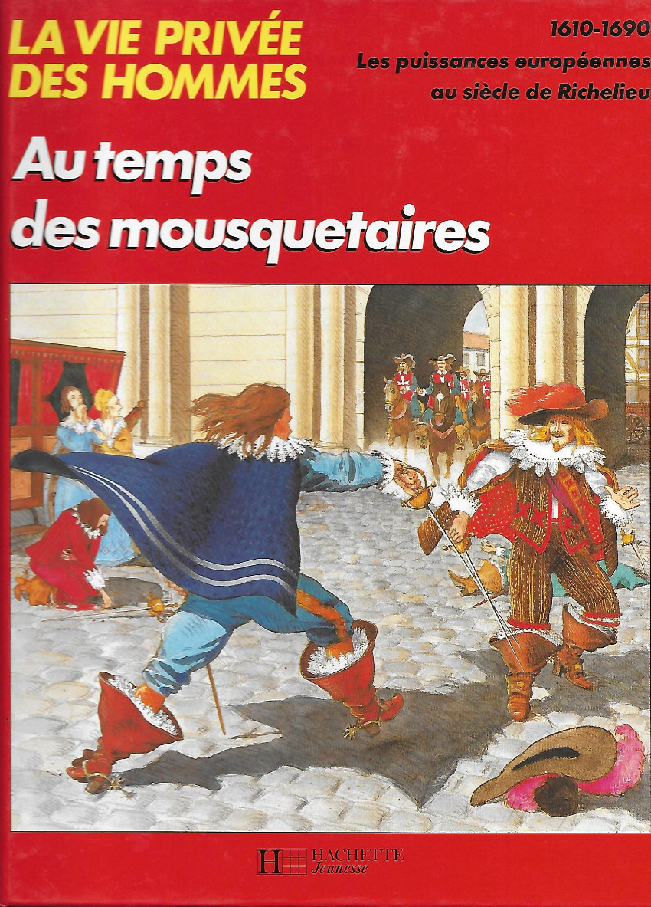
A dans deux mois maintenant !